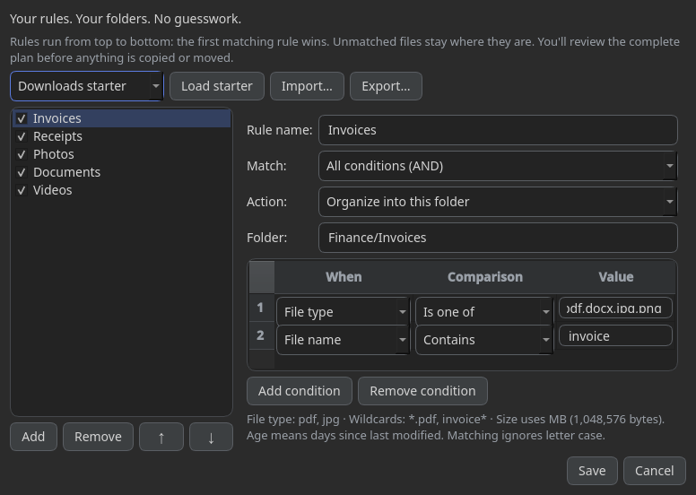

Rules, not guesswork
Match file type, name, path, size or age. Rules run in order; unmatched files stay where they are. Smart Rules is Free.
YOUR FILES. YOUR RULES.
Turn a crowded folder into a plan you can actually review. SortOut organizes locally, follows your rules, and keeps an operation history for Undo.
Free organizing tools · Windows x64 · No account for Free features

BUILT AROUND YOUR DECISIONS
Match file type, name, path, size or age. Rules run in order; unmatched files stay where they are. Smart Rules is Free.
Scan without moving anything. Inspect the proposed folders, adjust the plan, and choose copy or move when you’re ready.
History records each operation for Undo. Undo depends on the files and destinations still being available; keep a separate backup.
Duplicate Finder checks file contents locally and opens a review of matching copies. Repeat scans can reuse a bounded local hash cache.
Preview is Free. Applying duplicate cleanup requires Pro. Whole-drive scans can still take time; cleanup rechecks contents before using the Recycle Bin.
Ordinary sorting and duplicate hashing stay on your computer. Optional AI can send names, relative paths and your instructions to the provider you select after consent.
No built-in advertising or usage telemetry. Local logs and Undo records may contain paths and are not all encrypted.
PICK HOW YOU RUN IT
The Qt6 release is being validated. Downloads will be enabled only after the Windows package checks finish. No payment is needed for Free features.
RECOMMENDED FOR MOST PEOPLE
A per-user Windows installation. No admin access or network download is intended during installation.
NO INSTALLATION REQUIRED
Extract the full ZIP into a writable folder, then run SortOut. Keep its companion files together.
Windows x64. Initial packages are unsigned; Windows may show a publisher warning. Verify checksums and the source before deciding to run. Updates are currently manual, not automatic. Microsoft Store availability is not yet approved.
Release notes, checksums & third-party sources →FREE FIRST. NO PRESSURE.
Smart Rules, file type, name, date, size and keyword organization, profiles, preview and operation history are Free. Pro gates applying Duplicate Finder and AI Grouping plans.
Yes, where permissions allow, but start with a small disposable folder. File count, disk speed and same-size candidates matter more than drive capacity alone. Cache reuse does not eliminate file enumeration.
No background watcher is included. You choose a folder, review the plan and confirm the operation. Project / Code Detector is parked for a future release.
No. Legal documents in the application are clearly marked review drafts. Seller details and merchant onboarding must be completed before paid sales open. Mandatory consumer rights will not be waived.